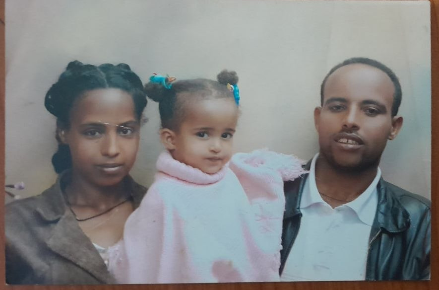

But there is more to me than school and coding. I love music, especially R&B, getting lost in good shows, having meaningful conversations, laughing over completely random things, and making memories with the people I care about. I am an empathetic person, and I tend to notice the little things and care about how people feel. I think deeply about things, and sometimes I probably overthink more than I should. I can be pretty observant, and I value genuine connections and meaningful conversations.I have changed a lot over the years, and I am still learning more about myself along the way. I enjoy being around people I am comfortable with, making memories, trying new things, and having experiences that I will look back on and appreciate. I do not have everything planned out, but I am comfortable taking life as it comes and seeing where it leads.
More than a portfolio , this is me
I am Selam ,a curious student, aspiring developer, music lover, and someone who is still figuring out where life will take me music lover, and someone who is still figuring out where life will take me. This website is a little glimpse into who I am, the journey I am on, thepeople who matter to me, and the things that make me happy. I am still learning,growing, dreaming,and becoming the person I want to be.About Me
So, who is Selam?
I am someone who is still
figuring things out and I think that is one of the
most honest things I can say about myself. I am
curious by nature, and when something catches my
attention, I want to understand it, explore it, and
usually ask way too many questions about it.
I am currently a fresh student at AAU, and I am still figuring
out what I want to study and where I want to go with
it. Lately, I have been getting ore into coding and
web development, mostly because I like learning how
things work and actually makingthings myself. I am
still exploring what I am interested in, so I am not
really in a rush to have everything figured out yet.
My Journey
My journey has been a mix of school, friendships, new experiences, and random things I have picked up along the way. Finishing Grade 12 with 516/600 was a big part of it, but life has obviously been more than just school. Starting university, meeting new people, coding, finding new interests, and making memories have all been part of it. I have changed a lot along the way, and I am still figuring out what comes next, but I am enjoying where I am right now.
Friends and Family
my family
My family is a pretty big part of who I am. They are the people I grew up around, the ones who have seen basically every version of me, and probably know me better than I think they do. We have our good moments, our random moments, and of course, the occasional disagreements, but that is just family. I have a lot of memories with them, from simple everyday moments to the bigger things we have experienced together. I may not always say it, but I appreciate having them in my life and having people I can always call family.iI LOVE THEM SO MUCH
